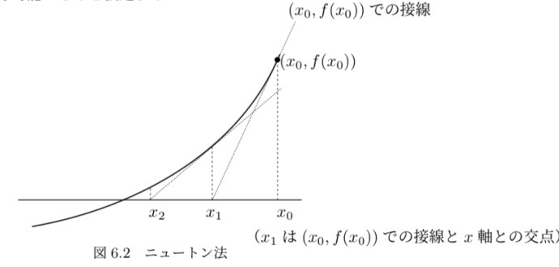

ニュートン法では \( f(x) \) は微分可能であると仮定する。
図6.2 ニュートン法
#include <stdio.h>
#include <math.h>
double f(double x){
return tan(x) - 2.0 * x;
}
double df(double x){
return 1.0 / cos(x) / cos(x) - 2.0;
}
int main(){
int N = 100, i;
double x0 = 1.0, x;
double eps = 1e-9, delta = 1e-9;
for(i = 0; i < N; i++){
double x1 = x0 - f(x0) / df(x0);
if(fabs(x1 - x0) < eps || fabs(f(x1)) < delta){
x = x1;
break;
}
x0 = x1;
}
printf("x = %.10e\nf(x) = %.10e\ninteration = %d\n", x, f(x), i);
return 0;
}
第1シンプソン公式は、積分区間 \([a, b]\) を2等分して、その間を2次式で近似して得られるものである。
一般に積分区間を2n等分し、\( h = \frac{b - a}{2n} \) として、
\([a, a + 2h]\), \([a + 2h, a + 4h]\), …, \([a + 2(i + 1)h, a + 2(i + 2)h]\), …, \([a + 2(n - 1)h, b]\)
のn個の小区間に対して第1シンプソン公式を適用する。
\( x_i = a + ih \quad (i = 0, 1, \dots, 2n) \) とすると、\( x_{2n} = b \) であり、
\[ \int_a^b f(x) dx \approx \frac{h}{3} \sum_{i=0}^{n-1} \left( f(x_{2i}) + 4f(x_{2i+1}) + f(x_{2i+2}) \right) \]これは次のように変形される：
\[ = \frac{h}{3} \left( \sum_{i=0}^{n-1} f(x_{2i}) + 4 \sum_{i=0}^{n-1} f(x_{2i+1}) + \sum_{i=0}^{n-1} f(x_{2i+2}) \right) \] \[ = \frac{h}{3} \left( \sum_{i=0}^{n-1} f(x_{2i}) + 4 \sum_{i=0}^{n-1} f(x_{2i+1}) + \sum_{i=1}^{n} f(x_{2i}) \right) \] \[ = \frac{h}{3} \left( f(x_0) + 4 \sum_{i=0}^{n-1} f(x_{2i+1}) + \sum_{i=1}^{n-1} f(x_{2i}) + f(x_{2n}) \right) \] \[ = \frac{h}{3} \left( f(a) + 2 \sum_{i=1}^{n-1} f(x_{2i}) + 4 \sum_{i=0}^{n-1} f(x_{2i+1}) + f(b) \right) \]ただし、
\[ x_i = a + ih, \quad (i = 0, 1, \dots, 2n) \] \[ h = \frac{b - a}{2n} \]となる。
#include <stdio.h>
#include <math.h>
double f(double x){
return 1.0 / (x * x + 1.0);
}
int main(){
int i, n = 2000;
double true_value = M_PI / 4.0;
double a = 0.0, b = 1.0;
double h = (b - a) / 2.0 / n;
double sum_2i0 = 0.0, sum_2i1 = 0.0;
for(i = 1; i < n; i++) sum_2i0 += f(a + 2.0 * i * h);
for(i = 0; i < n; i++) sum_2i1 += f(a + (2.0 * i + 1.0) * h);
double fs = h / 3.0 * (f(a) + 2.0 * sum_2i0 + 4.0 * sum_2i1 + f(b));
printf("n = %d\n", n);
printf("first Simpson = %.10e\n", fs);
printf("true value = %.10e\n", true_value);
return 0;
}
直接法にはガウスの消去法、ガウス・ジョルダンの消去法、LU分解法等があるが、ここでは代表的なものとしてガウスの消去法について述べる。
ガウスの消去法は、1. 前進消去と2. 後退代入の2段階からなる。また、ピボットの選択が必要になる。
以下ではそれらについて例を用いながら説明する。
例 7.2 次の4元連立1次方程式を解くことを考える。
\[ \begin{cases} 4x_0 + 3x_1 + 2x_2 + x_3 = 20 \\ 3x_0 + 2x_1 + x_2 + 2x_3 = 15 \\ 2x_0 + x_1 + 4x_2 + 3x_3 = 9 \\ x_0 + 2x_1 + 3x_2 + 5x_3 = 9 \end{cases} \](1) \(k = 0\): 最初の方針として第1行目以下の第0列目の係数を消去することを考える。以下のように方程式を変形する。
\[ \begin{cases} (1\text{行目の方程式}) \\ (2\text{行目の方程式}) - (1\text{行目の方程式}) \times \frac{3}{4} \\ (3\text{行目の方程式}) - (1\text{行目の方程式}) \times \frac{2}{4} \\ (4\text{行目の方程式}) - (1\text{行目の方程式}) \times \frac{1}{4} \end{cases} \]これにより次の方程式が得られる。
\[ \begin{cases} 4x_0 + 3x_1 + 2x_2 + x_3 = 20 \\ \frac{7}{4}x_1 + \frac{1}{2}x_2 + \frac{5}{2}x_3 = -15 \\ \frac{1}{2}x_1 + \frac{7}{2}x_2 + \frac{5}{2}x_3 = 8 \\ \frac{1}{4}x_1 + \frac{5}{2}x_2 + \frac{7}{4}x_3 = 24 \end{cases} \](2) \(k = 1\): 次に第2行目以下の第1列目の係数を消去することを考える。
\[ \begin{cases} (2\text{行目の方程式}) \\ (3\text{行目の方程式}) - (2\text{行目の方程式}) \times \frac{17}{4} \\ (4\text{行目の方程式}) - (2\text{行目の方程式}) \times \frac{7}{2} \end{cases} \](3) \(k = 2\): 最後に第3行目以下の第2列目の係数を消去することを考える。
これにより、階段状の連立方程式が得られる。これを前進消去という。
\p>この例を一般化すると、前進消去は以下のように書ける。 \[ \begin{cases} a_{00}x_0 + a_{01}x_1 + \dots + a_{0n-1}x_{n-1} = b_0 \\ a_{10}x_0 + a_{11}x_1 + \dots + a_{1n-1}x_{n-1} = b_1 \\ a_{i0}x_0 + a_{i1}x_1 + \dots + a_{in-1}x_{n-1} = b_i \\ \vdots \\ a_{n-10}x_0 + a_{n-1}x_1 + \dots + a_{n-1n-1}x_{n-1} = b_{n-1} \end{cases} \]この連立方程式の \(a_{i0}, a_{i1}, \dots, a_{in-1}\) をすべて0にするように変形する。これを繰り返すことで、次のような3角形の連立方程式が得られる。
後退代入は以下のように行う。
\[ \begin{cases} x_3 = 4 \\ x_2 = 3 \\ x_1 = 2 \\ x_0 = 1 \end{cases} \]これにより、各変数の値を順次求めることができる。
一般的には次の式で表される。
\[ x_k = \frac{b_k - \sum_{j=k+1}^{n-1} a_{kj}x_j}{a_{kk}} \]このようにして \(k=n-1\) から0まで計算を行う。
#include <stdio.h>
#include <stdlib.h>
#include <math.h>
#define N 4
int main(){
int i, j, k, n = N;
double sum;
double X[N];
double A[N][N] = {
{4.0, 3.0, 2.0, 1.0},
{2.0, 5.0, -3.0, -2.0},
{1.0, -4.0, 8.0, -1.0},
{-3.0, 2.0, -4.0, 5.0}
};
double B[N] = {20.0, -5.0, 13.0, 9.0};
// 前進消去
for(k = 0; k < n - 1; k++){
for(i = k + 1 ; i < n; i++){
for(j = k + 1; j < n; j++){
A[i][j] -= A[i][k] * A[k][j] / A[k][k];
}
B[i] -= A[i][k] * B[k] / A[k][k];
}
}
// 行列とベクトルの表示
for(i = 0; i < N; i++){
for(j = 0; j < N; j++){
if(i > j){
printf("a%d%d = %lf, ", i + 1, j + 1, 0.0);
}
else{
printf("a%d%d = %lf, ", i + 1, j + 1, A[i][j]);
}
}
printf("b%d = %lf\n", i + 1, B[i]);
}
// 後退代入
X[n - 1] = B[n - 1] / A[n - 1][n - 1];
for(k = n - 2; k >= 0; k--){
sum = 0.0;
for(j = k + 1; j < n; j++){
sum += A[k][j] * X[j];
}
X[k] = (B[k] - sum) / A[k][k];
}
// 結果の表示
for(i = 0; i < N; i++){
printf("X%d = %lf\n", i + 1, X[i]);
}
return 0;
}
反復法は、解の近似値を初期値として、反復計算を必要な精度まで繰り返す方法である。反復法にはヤコビ法、ガウス・ザイデル法がある。
次の連立1次方程式を解くことを考える。
\[ \begin{cases} 9x_0 + 2x_1 + x_2 + x_3 = 20 \\ 2x_0 + 8x_1 - 2x_2 + x_3 = 16 \\ x_0 - 2x_1 + 7x_2 - 2x_3 = 8 \\ x_0 - x_1 - 2x_2 + 6x_3 = 17 \end{cases} \]各式を仮に \( x_i \) について解くと、以下のようになる。
\[ \begin{cases} x_0 = \frac{1}{9}(20 - 2x_1 - x_2 - x_3) \\ x_1 = \frac{1}{8}(16 - 2x_0 + 2x_2 - x_3) \\ x_2 = \frac{1}{7}(8 - x_0 + 2x_1 + 2x_3) \\ x_3 = \frac{1}{6}(17 - x_0 + x_1 + 2x_2) \end{cases} \]この操作を反復する。以下では、\( k \) は回目の繰り返しを示す。
\[ \begin{cases} x_0^{(k+1)} = \frac{1}{9}(20 - 2x_1^{(k)} - x_2^{(k)} - x_3^{(k)}) \\ x_1^{(k+1)} = \frac{1}{8}(16 - 2x_0^{(k)} + 2x_2^{(k)} - x_3^{(k)}) \\ x_2^{(k+1)} = \frac{1}{7}(8 - x_0^{(k)} + 2x_1^{(k)} + 2x_3^{(k)}) \\ x_3^{(k+1)} = \frac{1}{6}(17 - x_0^{(k)} + x_1^{(k)} + 2x_2^{(k)}) \end{cases} \]これを繰り返すと、\( x_0^{(k+1)} \) と \( x_0^{(k)} \) の差がほとんどなくなり収束する。これがヤコビの反復法である。
ヤコビの反復法を一般的に記述すると、次のようになる。
\[ \begin{aligned} x_0^{(k+1)} &= \frac{1}{a_{00}} \left( b_0 - a_{01}x_1^{(k)} - \cdots - a_{0,n-1}x_{n-1}^{(k)} \right) \\ x_1^{(k+1)} &= \frac{1}{a_{11}} \left( b_1 - a_{10}x_0^{(k)} - a_{12}x_2^{(k)} - \cdots - a_{1,n-1}x_{n-1}^{(k)} \right) \\ &\vdots \\ x_i^{(k+1)} &= \frac{1}{a_{ii}} \left( b_i - \sum_{j=0}^{i-1} a_{ij}x_j^{(k)} - \sum_{j=i+1}^{n-1} a_{ij}x_j^{(k)} \right) \\ x_{n-1}^{(k+1)} &= \frac{1}{a_{n-1,n-1}} \left( b_{n-1} - a_{n-1,0}x_0^{(k)} - \cdots - a_{n-1,n-2}x_{n-2}^{(k)} \right) \end{aligned} \]ただし \( a_{ii} \neq 0 \) とする。上式を用いてヤコビの反復法の手順は以下のようになる。
ヤコビ法のアルゴリズムは次のように最適化できる。
\[ x_i^{(k+1)} = \frac{1}{a_{ii}} \left( b_i - \sum_{j=0}^{i-1} a_{ij}x_j^{(0)} - \sum_{j=i+1}^{n-1} a_{ij}x_j^{(0)} \right) \]このアルゴリズムが収束するためには、条件が必要であるが、詳細は省略する。
#include <stdio.h>
#include <stdlib.h>
#include <math.h>
#define N 4
int main(){
int i, j, k;
double sum_i, sum_n, sum_x;
double eps = 1e-8, max = 1e+20;
double X[N] = {0}, X1[N];
double A[N][N] = {
{4.0, 3.0, 2.0, 1.0},
{2.0, 5.0, -3.0, -2.0},
{1.0, -4.0, 8.0, -1.0},
{-3.0, 2.0, -4.0, 5.0}
};
double B[N] = {20.0, -5.0, 13.0, 9.0};
for(k = 0; k < max; k++){
sum_x = 0.0;
for(i = 0; i < N; i++){
sum_i = 0.0;
for(j = 0; j < i; j++){
sum_i += A[i][j] * X[j];
}
sum_n = 0.0;
for(j = i + 1; j < N; j++){
sum_n += A[i][j] * X[j];
}
X1[i] = (B[i] - sum_i - sum_n) / A[i][i];
sum_x += fabs(X1[i] - X[i]);
}
if(sum_x < eps){
for(i = 0; i < N; i++){
X[i] = X1[i];
}
break;
}
for(i = 0; i < N; i++){
X[i] = X1[i];
}
}
printf("Jacobi's method\n");
for(i = 0; i < N; i++){
printf("X[%d] = %.10e\n", i, X[i]);
}
printf("iteration = %d\n", k);
return 0;
}